The slide of the lecture is on the left, the same figure or table on the right, computed in the browser from the same data. The ▶ button moves the parameter step by step; the tables and worked examples are recomputed with it. Abbreviations: ARCH (autoregressive conditional heteroskedasticity), GARCH (generalised ARCH), GJR (Glosten–Jagannathan–Runkle), EGARCH (exponential GARCH), IGARCH (integrated GARCH), EWMA (exponentially weighted moving average), SE (standard error), LR (likelihood ratio), AIC and BIC (Akaike and Bayesian information criteria), ACF (autocorrelation function), ARCH-LM (Lagrange multiplier test for ARCH effects), QLIKE (quasi-likelihood), DM (Diebold–Mariano), VaR (value at risk).
Volatility Comes in Episodes · Conditional Mean and Conditional Variance · The ARCH Model · The GARCH(1,1) Model · Estimation by Maximum Likelihood · Heavy-Tailed Innovations · GARCH in Six Markets · Asymmetry and the Leverage Effect · Diagnostics · Model Selection · Forecasting Volatility · VaR 1% from a GARCH Model
Volatility Comes in Episodes
S&P 500: Calm Years and Storms
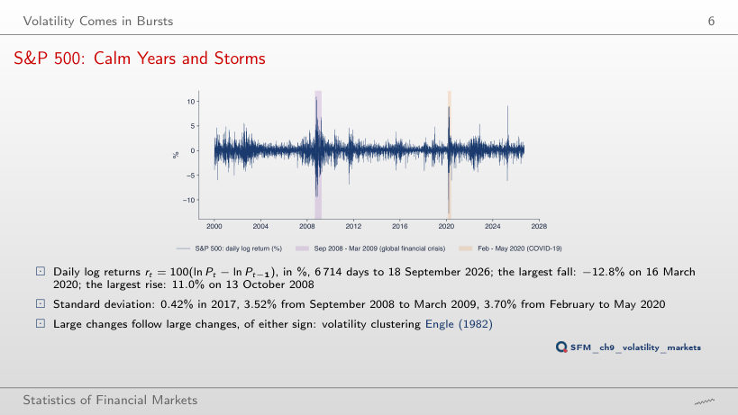
Answer
8.3 times: 3.52/0.422 = 8.34; from February to May 2020, 3.70/0.422 = 8.76. The whole-sample standard deviation, 1.21%, averages calm and stormy days and describes neither regime: the 2008 episode is 2.9 times above it.
Conditional Mean and Conditional Variance
Worked Example: Conditional and Unconditional Variance
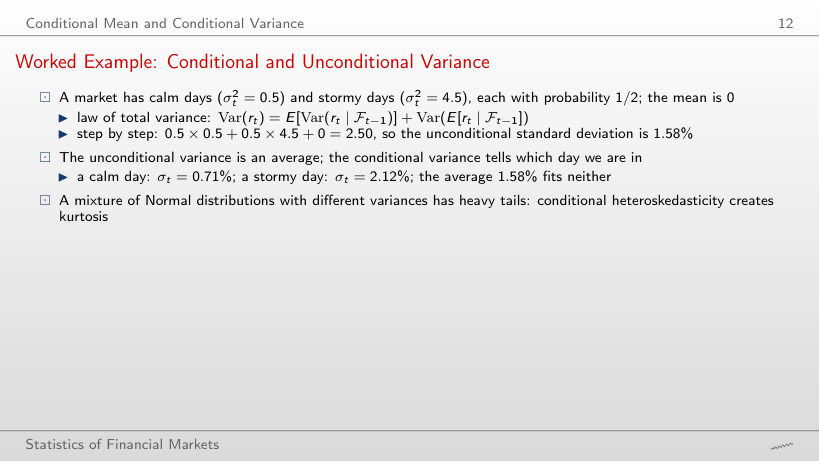
Worked example: the law of total variance
Answer
1.58%: the unconditional variance is the average of the variances, 0.5 × 0.5 + 0.5 × 4.5 = 2.50, and √2.50 = 1.58. The average of the volatilities, (0.71 + 2.12)/2 = 1.41%, is smaller, because the square root is concave. The mixture has kurtosis 4.92, although each regime is Normal.
The ARCH Model
ARCH(1): Properties
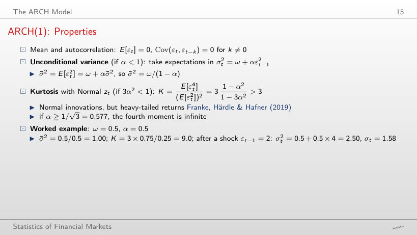
Worked example: unconditional variance, kurtosis and one ARCH(1) step
Answer
It becomes infinite: 3α² = 1.08 ≥ 1, that is α exceeds 1/√3 = 0.577 and the fourth moment no longer exists. The unconditional variance stays finite, ω/(1 − α) = 0.5/0.4 = 1.25.
Simulated Paths: i.i.d., ARCH(1) and GARCH(1,1)
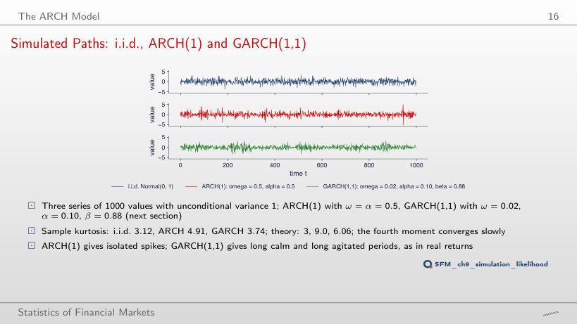
Answer
4.91, far below 9.0: the fourth moment converges slowly, because it depends on a few rare spikes. The i.i.d. series has 3.12 (theory 3), GARCH(1,1) has 3.74 (theory 6.06). With other seeds of the generator the sample values change a lot.
ARCH(q) and Its Limits
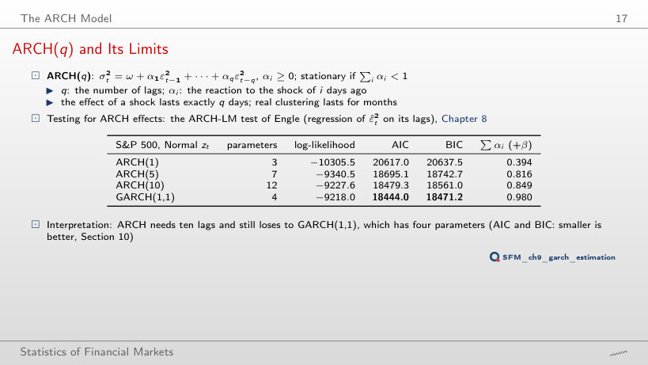
Models with Normal innovations (in green: the smallest AIC and BIC)
Answer
GARCH(1,1): BIC 18,471.2 against 18,561.0 for ARCH(10), 89.8 lower. It has a higher likelihood with a third of the parameters: the term βσ²(t − 1) summarises all past shocks with geometric weights. The BIC of ARCH(q) falls with every added lag up to q = 10, but stays above that of GARCH(1,1).
The GARCH(1,1) Model
Stationarity, Long-Run Variance and Kurtosis
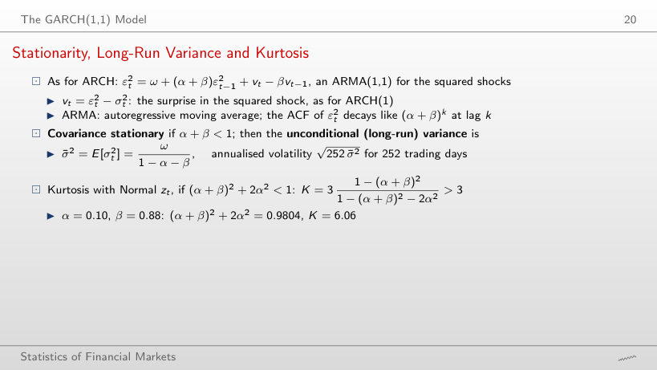
Worked example: long-run variance and kurtosis
Answer
Infinite: (α + β)² + 2α² = 0.9801 + 0.02 = 1.0001 ≥ 1. The unconditional variance stays finite (α + β = 0.99 < 1; with ω = 0.02, σ̄² = 2.00), but the fourth moment no longer exists: the condition for the kurtosis is stricter than that for stationarity.
Persistence and Half-Life
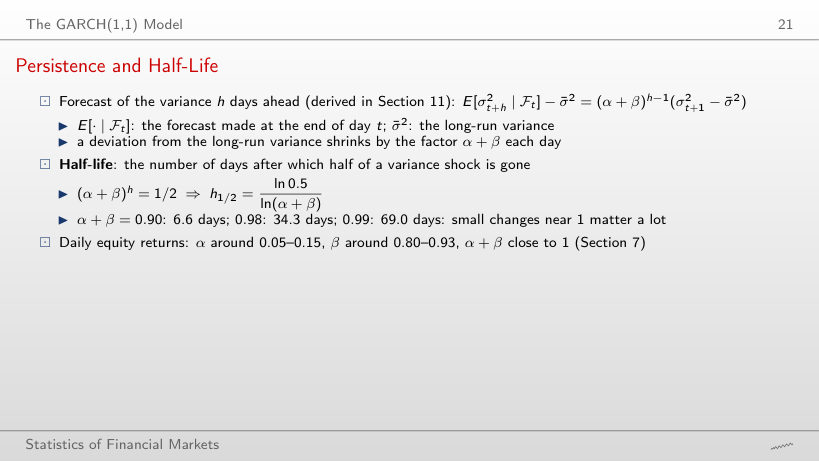
Worked example: the half-life
Answer
69.0 days, almost double: h½ ≈ ln 2/(1 − α − β), and 1 − α − β halves, from 0.02 to 0.01. For 0.90 it is 6.6 days; for the S&P 500 (α + β = 0.9947), 131 days.
Worked Example: One GARCH(1,1) Step
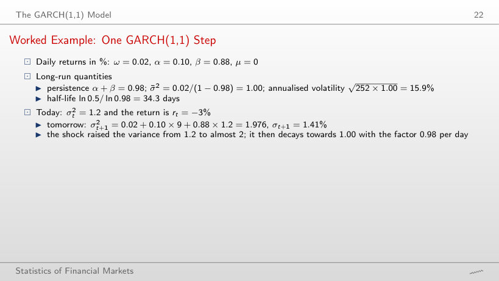
Worked example: one GARCH(1,1) step
Answer
Also 1.976: GARCH(1,1) uses ε², so the sign of the shock does not matter (here μ = 0). The value 1.376 = 0.02 + 0.10 × 3 + 0.88 × 1.2 forgets the square. Asymmetry needs GJR-GARCH or EGARCH (Section 8).
IGARCH and the EWMA Link
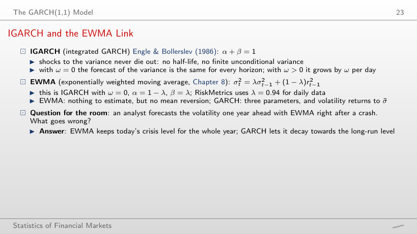
Worked example: IGARCH and GARCH forecasts after a crash
Answer
EWMA keeps the crisis level for the whole year. S&P 500, at the close of 16 March 2020: EWMA (λ = 0.94) forecasts 84.0% a year for every horizon; GARCH(1,1)-t starts at 111.0% and falls to 62.0% after 250 days, towards the long-run level of 27.3%. EWMA is an IGARCH with ω = 0: no mean reversion.
Estimation by Maximum Likelihood
The Likelihood of ARCH(1)
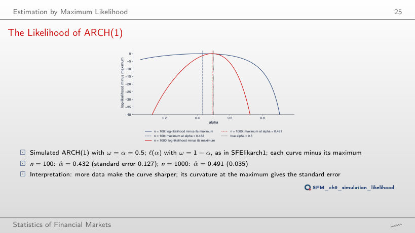
Answer
It falls to 0.035, 3.6 times smaller; the √n rule gives √10 = 3.16. The log-likelihood curve gets sharper, and α̂ = 0.491 is closer to the true value 0.5.
The Likelihood of GARCH(1,1)
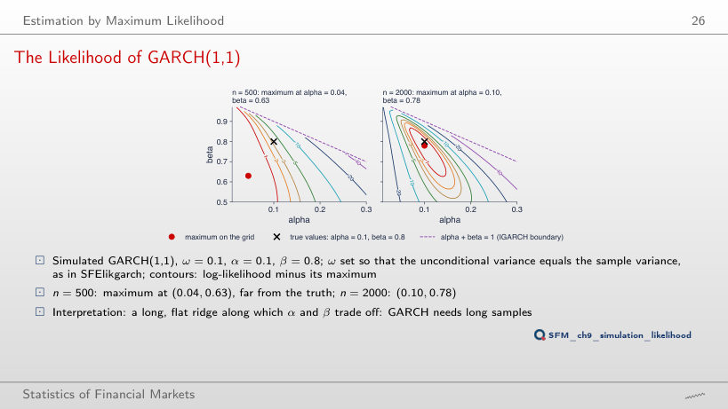
Answer
At (0.100, 0.78), close to the true values: the long ridge along which α and β trade off narrows as n grows. With other seeds of the generator (extra runs) the maximum for n = 500 ranges from (0.025, 0.95) to (0.205, 0.67).
Estimation Step by Step and with a Package
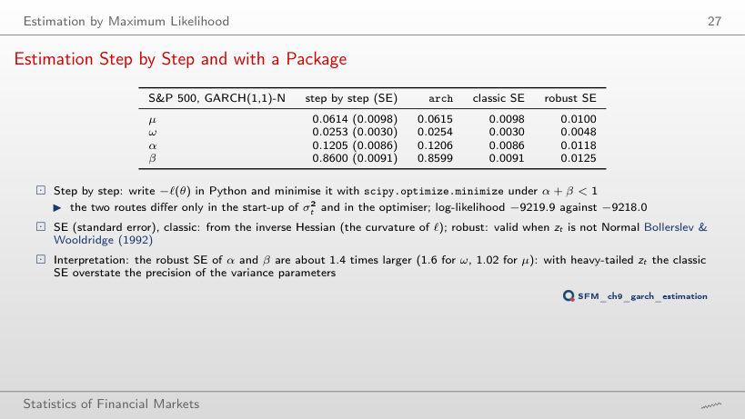
GARCH(1,1) with Normal innovations: step by step (scipy) and with the arch package
Answer
0.0118, 1.37 times larger (β: 1.37; ω: 1.63; μ: 1.02). The innovations have heavy tails, and the classic SE, computed as if z(t) were Normal, overstate the precision of the variance parameters. For the BET the ratio exceeds 2.6.
Heavy-Tailed Innovations
S&P 500: Three Innovation Distributions
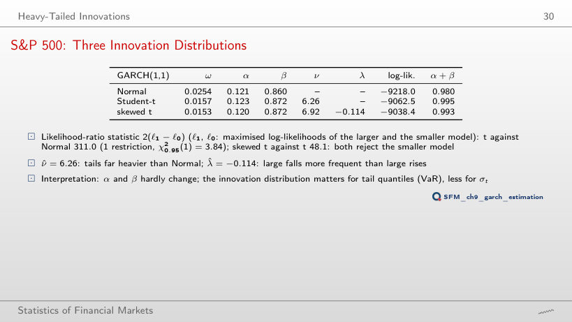
GARCH(1,1) with three innovation distributions
Answer
Little: α from 0.121 to 0.123, β from 0.860 to 0.872; the persistence rises from 0.980 to 0.995. The LR statistic, 311.0, is far above 3.84: the innovation distribution matters for the tail quantiles (VaR) more than for σ(t).
QQ Plots of the Standardised Residuals
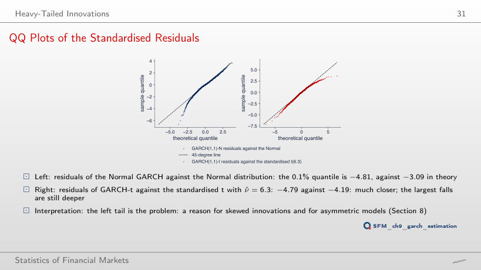
Answer
−4.19 = t⁻¹(0.001) × √((ν − 2)/ν) = −5.08 × 0.825. The GARCH-t residuals have −4.79: the t tail is much closer, but the largest falls are still deeper.
GARCH in Six Markets
GARCH(1,1)-t Estimates
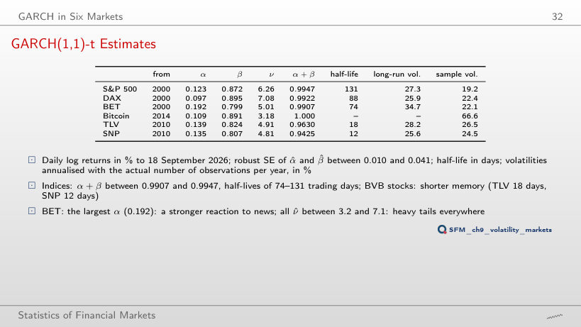
GARCH(1,1) in six markets (robust SE; annualised volatilities, in %)
Answer
A stronger reaction to yesterday's news: a 2% shock adds 0.192 × 4 = 0.77 to tomorrow's variance, against 0.123 × 4 = 0.49 for the S&P 500. The persistence is close, though (0.9907 against 0.9947), because the β̂ of the BET is smaller (0.799).
Interpretation: Bitcoin and the Long-Run Volatility
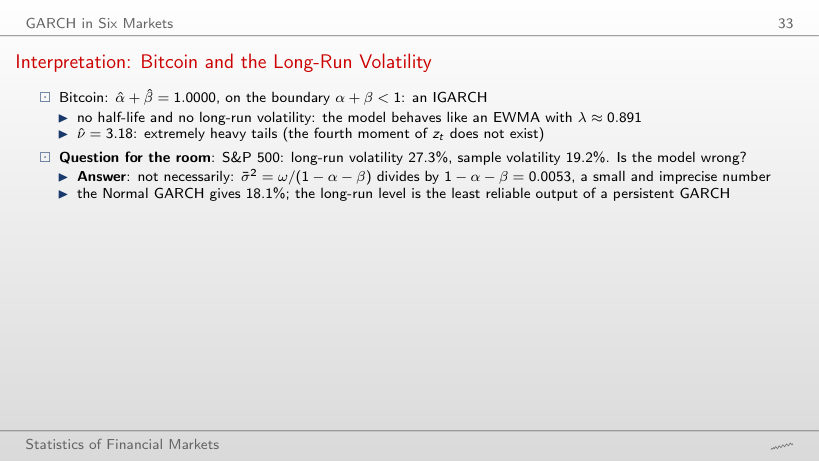
Worked example: the long-run volatility
Answer
Not necessarily: σ̄² = ω/(1 − α − β) divides by 1 − α − β = 0.0053, a small and imprecise number. With α + β lower by 0.002 (0.9927) the long-run volatility would be 23.3%; the Normal GARCH gives 18.1%. The long-run level is the least reliable output of a persistent GARCH.
Conditional Volatility: S&P 500 and DAX
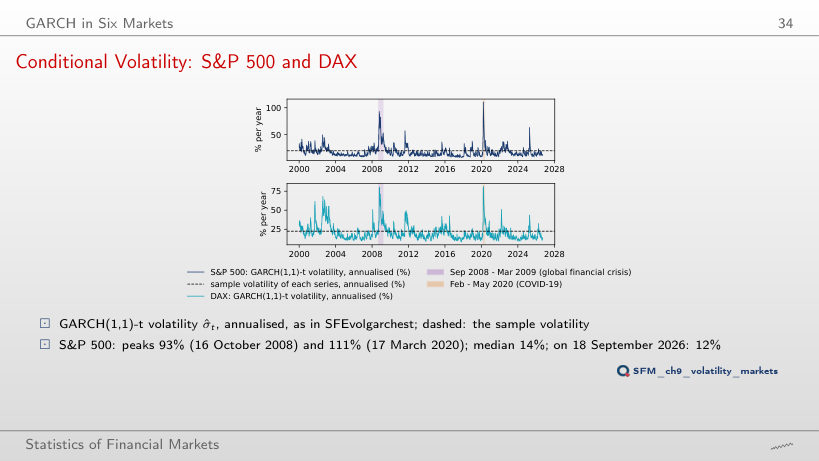
Answer
93%, on 16 October 2008: lower than in 2020, although the 2008 crisis lasted longer; the peak reflects the largest shocks of a short interval, not the length of the crisis. DAX: 80% in 2008 and 82% in 2020. The S&P 500 median is 14%, and the value on 18 September 2026 is 12%.
Conditional Volatility: BET and Bitcoin
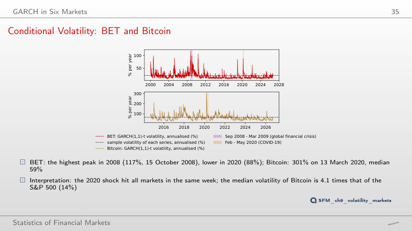
Answer
4.1 times (58.7/14.3); the ratio of the variances would be 4.1² ≈ 17. Peaks: Bitcoin 301% on 13 March 2020, BET 117% on 15 October 2008 and 88% in March 2020.
How Long Does a Shock Last?
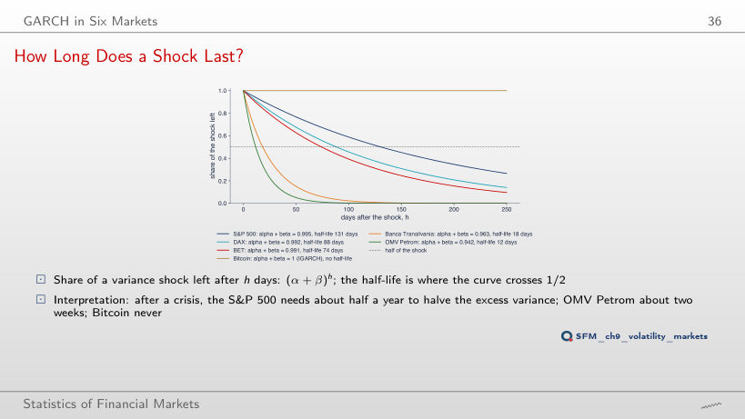
Answer
There is none: α̂ + β̂ = 1.000 (IGARCH), so a shock does not die out. The S&P 500 needs 131 days, the DAX 88, the BET 74, TLV 18, SNP 12. With GJR-t the S&P 500 persistence (α + β + γ/2) is 0.983, a half-life of 41.5 days.
Asymmetry and the Leverage Effect
GJR-GARCH and EGARCH
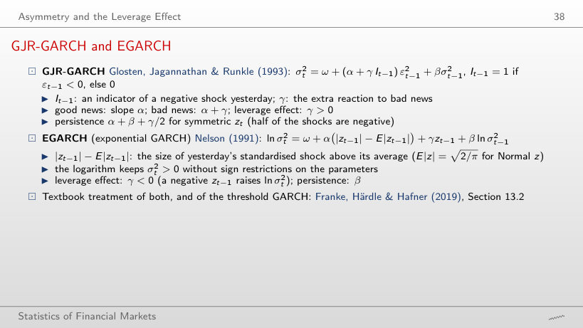
Worked example: the impact of a fall and of a rise
Answer
By 0: good news has the slope α = 0. After a 2% fall the term (α + γ)ε² adds 0.205 × 4 = 0.821; with σ²(t − 1) fixed at the sample variance 1.471, tomorrow's variance is 2.136 after the fall and 1.315 after the rise: the ratio 1.62.
News Impact Curves: S&P 500 and Bitcoin
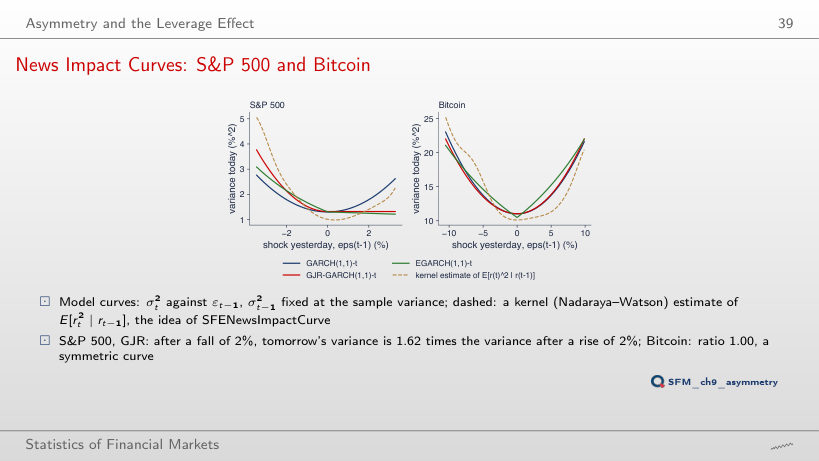
Answer
It falls to 1.16: the common term βσ²(t − 1) grows while the difference γε² stays the same, so it matters relatively less. With σ²(t − 1) at a quarter of the sample variance the ratio rises to 3.39: asymmetry shows most in calm periods.
Asymmetry in Six Markets
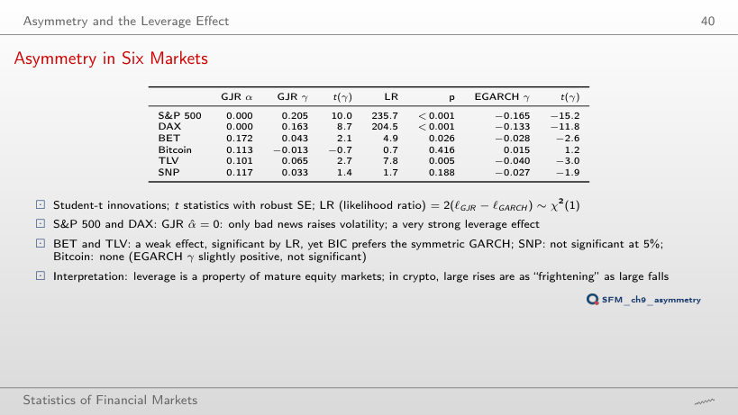
GJR-GARCH(1,1) and EGARCH(1,1): the asymmetry parameter γ (t statistics with robust SE)
Answer
BIC needs LR to exceed ln T = ln 6,670 = 8.8 for one more parameter; LR = 4.9 passes 3.84 (the 5% threshold) but not 8.8: the BET leverage effect is weak. For Bitcoin BIC picks EGARCH although γ is not significant: the logarithmic form fits the variance dynamics better, not the asymmetry.
Diagnostics
What GARCH Removes
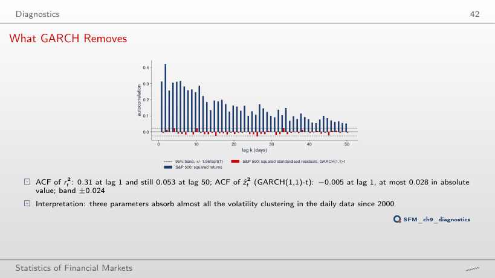
Answer
−0.005, inside the band ±0.024; the largest absolute value over 50 lags is 0.028. Three variance parameters absorb almost all the volatility clustering; at lag 50 the ACF of r² is still 0.053.
Diagnostics on Real Data
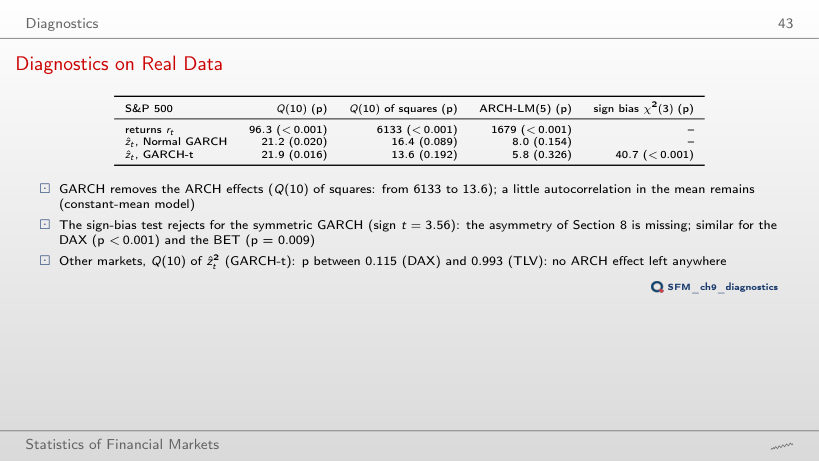
Tests on the returns and on the standardised residuals
Answer
Not entirely: no ARCH effects are left (Q(10) of the squares falls from 6,133 to 13.6), but the sign of past shocks still anticipates the variance (sign t = 3.56): the asymmetry is missing. A test that does not reject does not prove the model correct.
Model Selection
Nine Models for the S&P 500
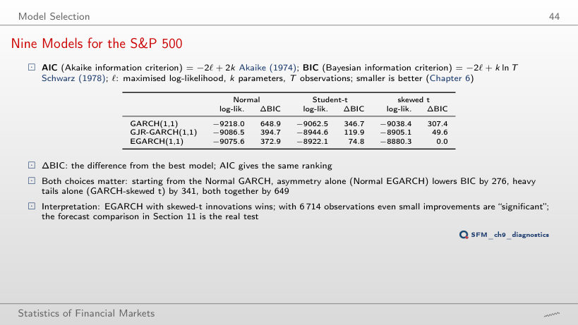
Log-likelihood and the difference from the best model (in green)
Answer
Heavy tails: 341, against 276 for asymmetry; both together (EGARCH with skewed t) lower BIC by 649, the best of the nine models. AIC gives the same order.
Forecasting Volatility
Worked Example: the S&P 500 on 18 September 2026
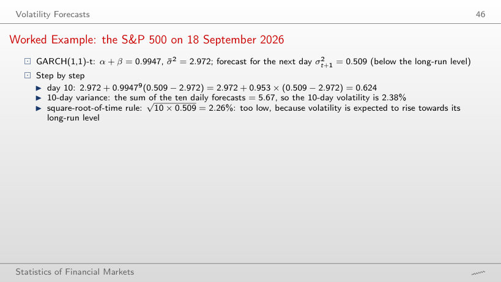
Worked example: the H-day forecast
Answer
2.38%: the daily forecasts rise towards the long-run level (day 10: 0.624), so their sum, 5.67, exceeds 10 × 0.509 = 5.09. In a crisis the relation reverses: the square-root rule gives values that are too large.
The Term Structure of Volatility
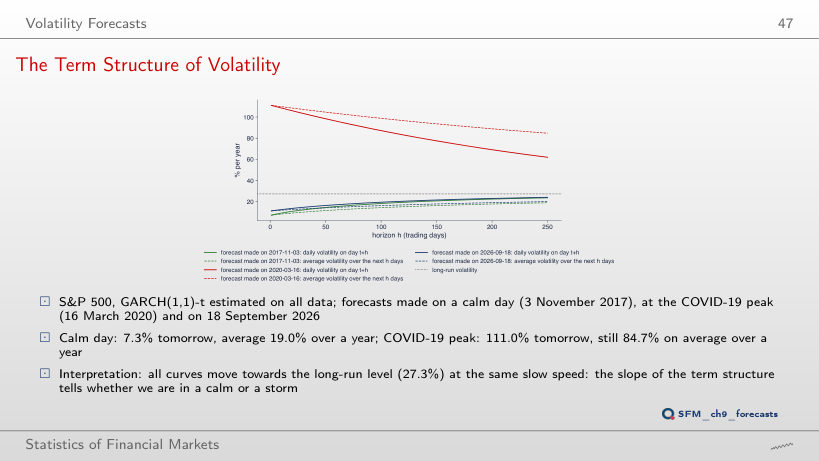
Answer
84.7%: with α + β = 0.9947 the gap to the long-run level shrinks by only 0.53% a day, and after 250 days the daily forecast is still 62.0%. On a calm day (3 November 2017) the curve rises: 7.3% tomorrow, 19.0% on average over a year.
GARCH against EWMA, Out of Sample
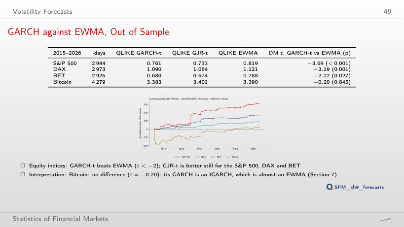
Next-day variance forecasts (in green: the smallest QLIKE; DM: t and p)
Answer
No detectable difference: the Bitcoin GARCH is an IGARCH, that is almost an EWMA. A large p does not show that the forecasts are equal, only that the test does not separate them. For the S&P 500 (t = −3.69), the DAX (−3.19) and the BET (−2.22) GARCH-t is significantly better.
VaR 1% from a GARCH Model
Conditional VaR
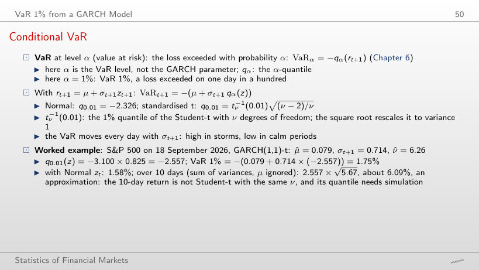
Worked example: one-day and H-day VaR
Answer
6.09% = 2.557 × √5.67: volatility is expected to rise towards its long-run level, so the √10 rule gives too little. This is an approximation: the 10-day return is not Student-t with the same ν, and its exact quantile needs simulation.
VaR 1% through the COVID-19 Crash
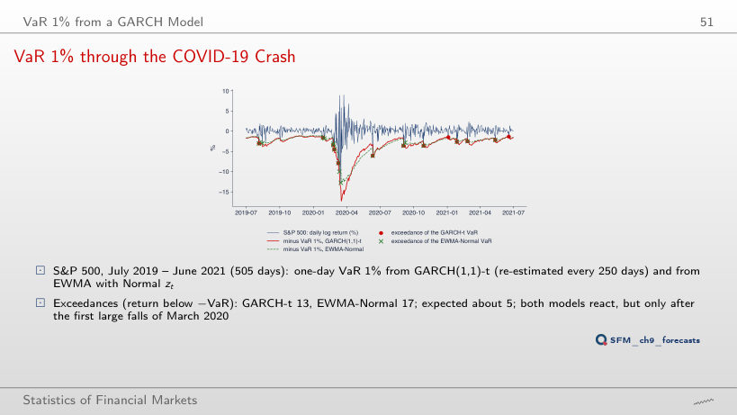
Answer
13 times, against about 5 expected (1% of 505); EWMA-Normal is exceeded 17 times. Both models react, but only after the first large falls of March 2020: a one-day forecast cannot anticipate the first shock.
Exceedances 2015–2026: a Preview of Backtesting
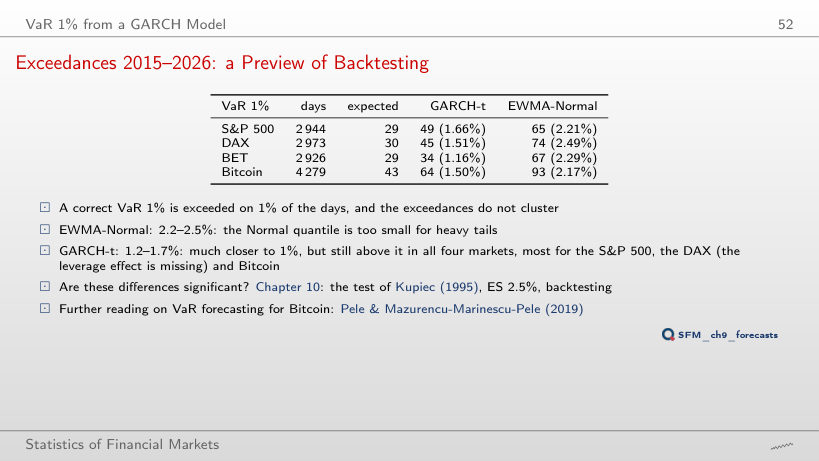
Exceedances of the one-day VaR, out of sample
Answer
The Normal quantile, −2.326, is not deep enough for heavy tails. GARCH-t, with the Student-t quantile, has 1.2–1.7%: much closer to 1%, but still above 1% in all four markets. Whether the differences are significant is tested in Chapter 10 (the Kupiec test).
Daily log returns, in %: S&P 500, DAX and BET from January 2000, Bitcoin from September 2014 (7 days a week), Banca Transilvania (TLV) and OMV Petrom (SNP) from 2010, from the adjusted price, to 18 September 2026; the two erroneous TLV days of May 2016 are removed. EODHD prices. The models are estimated with the arch package, with the code of the lecture (maximum likelihood, robust SE); from the fitted parameters the browser rebuilds the conditional variance day by day and computes from it the standardised residuals, the QQ plots, the news impact curves, the diagnostic tests, the information criteria, the forecasts and the VaR. The out-of-sample forecasts of GARCH-t and GJR-t (re-estimated every 250 days) are those of the lecture; the EWMA, the QLIKE losses, the DM tests and the exceedances are recomputed in the browser. The simulations use the Normal draws of the lecture's generator (the same seed). Other innovation distributions, other sample starts, other markets for the S&P 500 tables, ARCH(q) of other orders, other seeds and parameters of the simulations, other VaR levels and other evaluation periods are extra runs of the same code.